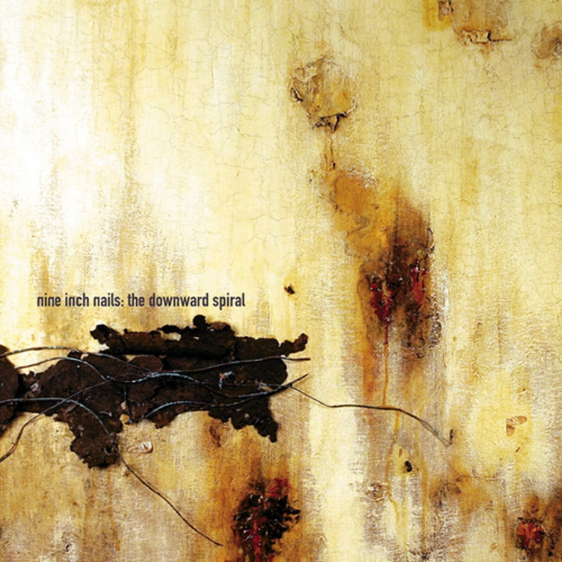
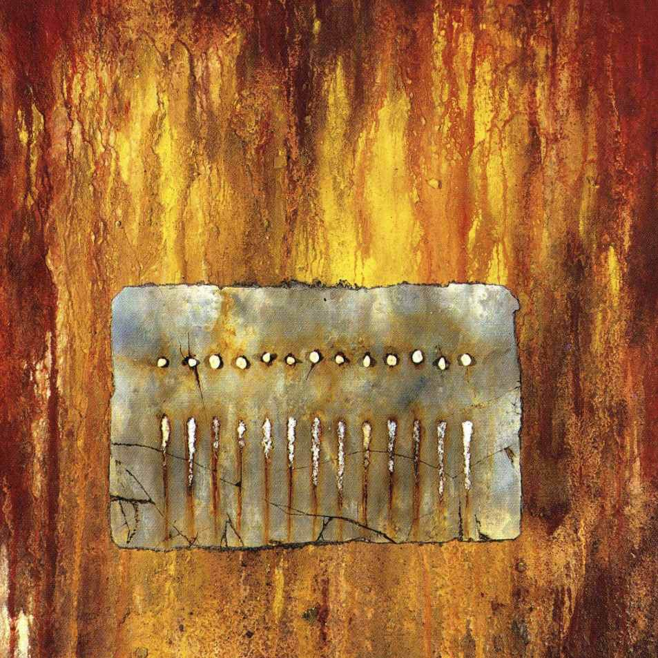
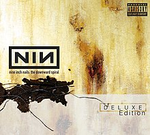
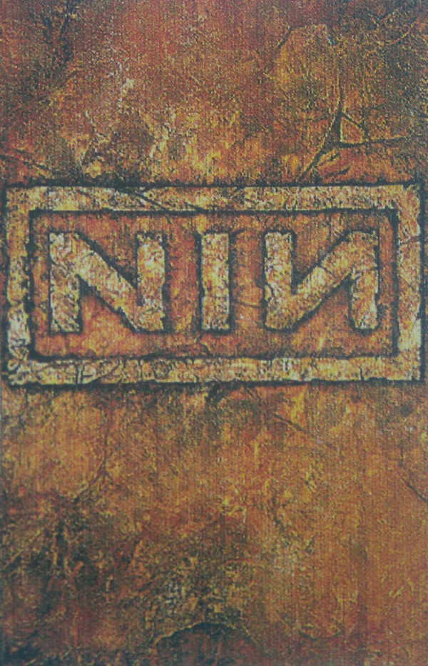
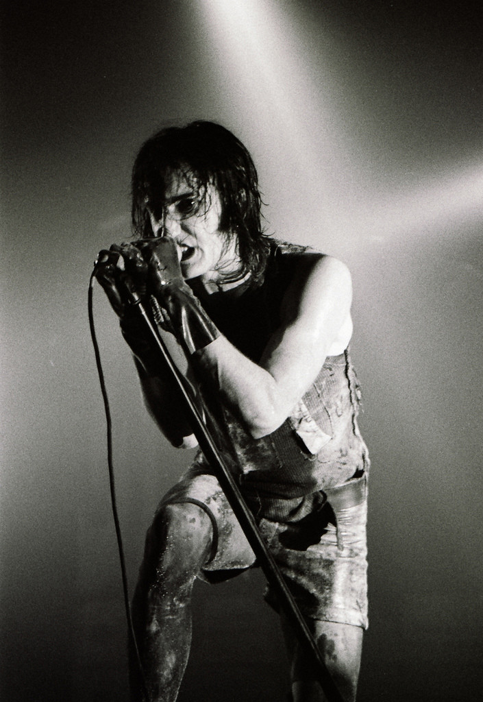
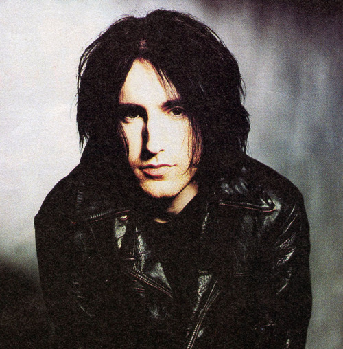
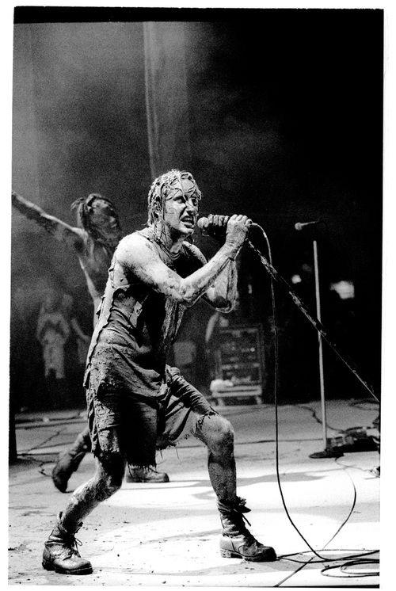
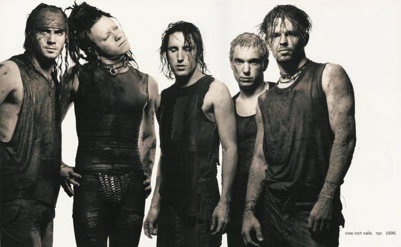
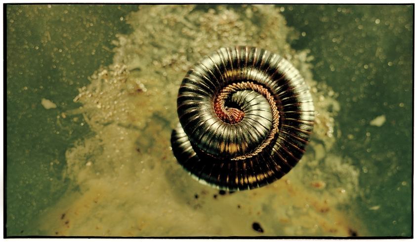

Nine Inch Nails Chronology
The Downward Spiral
The Downward Spiral is the
second studio album by American
industrial rock band Nine Inch Nails,
released on March 8, 1994, by Nothing
Records in the United States and Island
Records in Europe. It is a concept album
detailing the self-destruction of a man from
the beginning of his misanthropic "downward spiral"
to his suicidal breaking point. The album was
a commercial success and established Nine
Inch Nails as a reputable force in the 1990s
music scene, with its sound being widely
imitated, and the band receiving media attention
and multiple honors.

Halo 8: The Downward Spiral
Track Listing
- "Mr. Self Destruct" – 4:31
- "Piggy" – 4:24
- "Heresy" – 3:54
- "March of the Pigs" – 2:59
- "Closer" – 6:14
- "Ruiner" – 4:58
- "The Becoming" – 5:31
- "I Do Not Want This" – 5:41
- "Big Man with a Gun" – 1:36
- "A Warm Place" – 3:22
- "Eraser" – 4:53
- "Reptile" – 6:52
- "The Downward Spiral" – 3:58
- "Hurt" – 6:16

Background
Reznor conceived of The Downward Spiral after Nine Inch Nails' run in the lineup of the Lollapalooza festival tour, feeling increasingly alienated and disinterested. The band's concerts were known for their radical onstage dynamic in which members acted aggressively, injured themselves, destroyed instruments and polluted stages. Reznor had begun to feud with TVT Records, resulting in him cofounding Nothing Records with his former manager John Malm, Jr. as a subsidiary of Interscope. Simultaneously, he began fleshing out the concept for The Downward Spiral, focusing on the life and death of a misanthropic man who rebels against humanity, and kills God before attempting suicide. Reznor frequently struggled with drug addiction and depression, and the themes of the album gradually allegorized his living situation. His peers at some point recommended him the antidepressant Prozac, but he declined to be medicated.
Reznor wanted the album's sound to diverge from the abrasion of Broken, emphasizing mood, texture, restraint and subtlety, although he was unsure about its musical direction. The album's production was decided on to aim for "full range" sound, and he focused on texture and space, avoiding conventional usage of guitars or synthesizers with a recognizable sound palette. Subsequently, he mainly worked with a Macintosh computer, using music editor programs on the computer to analyze and invert frequencies in tracks as a form of sound design.

2004 Deluxe Edition cover
Music and lyrics
Numerous layers of metaphors are present throughout The Downward Spiral, leaving it open to wide interpretation. The album relays nihilism and is defined by a prominent theme of self-abuse and self-control. It is a semi-autobiographical concept album, in which the overarching plot follows the protagonist's descent into madness in his own inner solipsistic world through a metaphorical "downward spiral", dealing with religion, dehumanization, violence, disease, society, drugs, sex, and finally, suicide. Reznor described the concept as consisting of "someone who sheds everything around them to a potential nothingness, but through career, religion, relationship, belief and so on." Media journalists like The New York Times writer Jon Pareles noted the album's theme of angst had already been used by grunge bands like Nirvana, and that Nine Inch Nails' depiction was more generalized.
Using elements of genres such as techno, dance, electronic, heavy metal, and hard rock, The Downward Spiral is considered industrial rock, industrial, alternative rock and industrial metal. Reznor regularly uses noise and distortion in his song arrangements that do not follow verse–chorus form, and incorporates dissonance with chromatic melody or harmony (or both). The treatment of metal guitars in Broken is carried over to The Downward Spiral, which includes innovative techniques such as expanded song structures and unconventional time signatures. The album features a wide range of textures and moods to illustrate the mental progress of the central protagonist. Reznor's singing follows a similar pattern from beginning to end, frequently moving from whispers to screams. These techniques are all used in the song "Hurt", which features a highly dissonant tritone played on guitar during the verses, a B5#11, emphasized when Reznor sings the eleventh note on the word "I" every time the B/E# dyad is played.
"Mr. Self Destruct", a song about a powerful person, follows a build-up sampled from the 1971 film THX 1138 with an "industrial roar" and is accompanied by an audio loop of a pinion rotating. "The Becoming" expresses the state of being dead and the protagonist's transformation into a non-human organism. "Closer" concludes with a chromatic piano motif: The melody is introduced during the second verse of "Piggy" on organ, then reappears in power chords at drop D tuning throughout the chorus of "Heresy", and recurs for the final time on "The Downward Spiral". The album was chiefly inspired by David Bowie's Low, an experimental rock album which Reznor related to on songwriting, mood, and structures, as well as progressive rock group Pink Floyd's The Wall, a concept album featuring themes of abuse, isolation, and mental instability.
Release and reception
The Downward Spiral's release date was delayed at various times to slow down Reznor's intended pace of the album's recording. The first delay caused the process of setting up Le Pig to take longer than he expected, and its release was postponed again as he was educating himself different ways to write songs that did not resemble those on Broken and Pretty Hate Machine. He considered delivering the album to Interscope in early 1993, only to experience a writer's block as he was unable to produce any satisfactory material. Interscope grew impatient and concerned with this progress, but Reznor was not forced by their demands of expediency despite crediting the label for giving him creative freedom. He told rock music producer Rick Rubin that his motivation for creating the album was to get it finished, thus Rubin responded that Reznor might not do so until he makes music that is allowed to be heard. Reznor realized that he was in the most fortunate situation he imagined when the album was recorded with a normal budget, "cool" equipment, and a studio to work at.
Released on March 8, 1994, to instant success, The Downward Spiral debuted at number two on the US Billboard 200, selling nearly 119,000 copies in its first week. On October 28, 1998, the Recording Industry Association of America (RIAA) certified the album quadruple platinum, and by December 2011, it had sold 3.7 million copies in the United States. The album peaked at number nine on the UK Albums Chart, and on July 22, 2013, it was certified gold by the British Phonographic Industry (BPI), denoting shipments in excess of 100,000 copies in the United Kingdom. It reached number 13 on the Canadian RPM albums chart and received a triple platinum certification from the Canadian Recording Industry Association (CRIA) for shipping 200,000 copies in Canada. A group of early listeners of the album viewed it as "commercial suicide", but Reznor did not make it for profit as his goal was to slightly broaden Nine Inch Nails' scope. Reznor felt that the finished product he delivered to Interscope was complete and faithful to his vision and thought its commercial potential was limited, but after its release he was surprised by the success and received questions about a follow-up single with a music video to be shown on MTV. The album has since sold over four million copies worldwide.

"Mr. Self Destruct"
"The Becoming"
"Ruiner"
Photos




